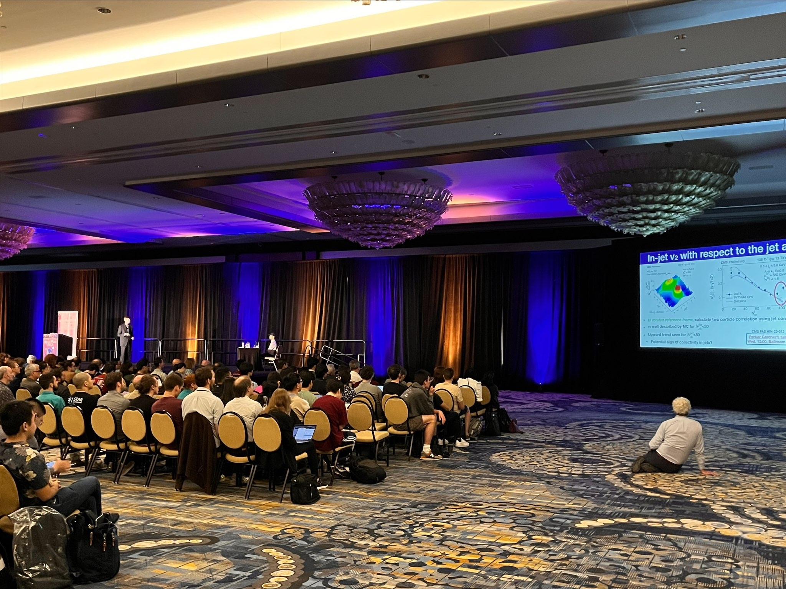
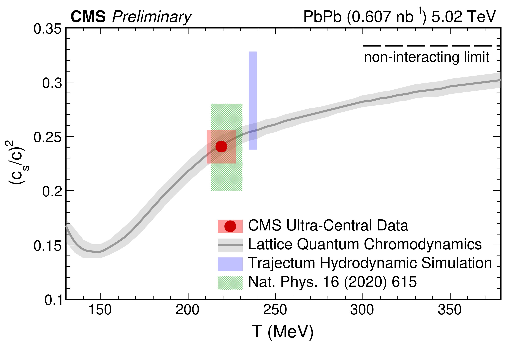
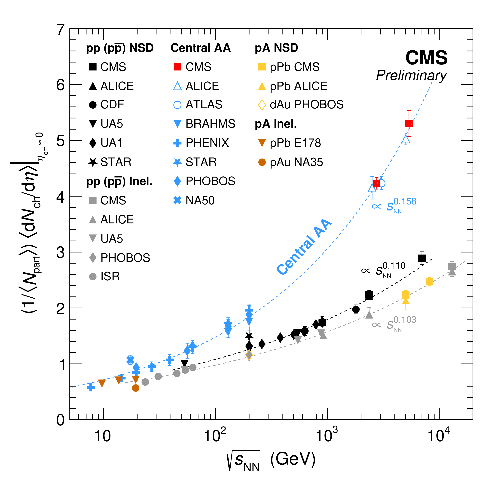

Quark Matter 2023
September 9, 2023

Quark Matter is the biggest conference in our field, and this year I had the honor of presenting the CMS Collaboration's newest results on the first day of the conference to a ballroom of nearly 1000 people! In the above photo, you can see me on stage guiding everyone through one of the recent results that I worked on. As you can see, the projection screens were extremely far away from the stage, so some precision work with the laser pointer was needed to guide people's attention!
One of the results I was most excited to show for the first time was a new measurement of the speed of sound within the quark-gluon plasma. By looking at the spectrum of particles produced in head-on lead lead collisions, my colleagues and I were able to determine that pressure waves in this hot medium move at nearly half the speed of light! In the preliminary plot below, you can see our measurement in red, displayed on top of a theoretical prediction in gray calculated using large supercomputers. The agreement between the theory and experiment is impressive!

Another result that I worked on, which we showed at this conference for the first time, is the measurement of the particle density in 5.36 TeV lead-lead collisions. The data for this measurement were taken during a test run in 2022, which represented the beginning of the LHC Run 3, and corresponds to a world-record energy for heavy ion collisions. In the figure below, you can see the particle density we measure, shown by the red data point in the top right corner of the plot. The data are consistent with extrapolations coming form measurements of the particle density at lower collision energies. This is the first LHC Run 3 heavy ion measurement, and opens an exciting new Run 3 era of heavy ion physics at the LHC!

The fun didn't end there however. CMS also showed results on the production of \(\tau^+\tau^-\) production in ultraperipheral collisions, and measurements of \(B^+\) and \(B_s^0\) mesons, as well as \(\Lambda_c^+\) baryons. In addition, we showed a new result that I worked on at Rice University which involves searching for collective effects in high-multiplicity jets (which is shown on the slide in the first image of this story). Finally, there were new results studying the substructure of jets in heavy ion collisions. Overall, it was a very strong showing from CMS this year, and I am proud to have been a part of it!